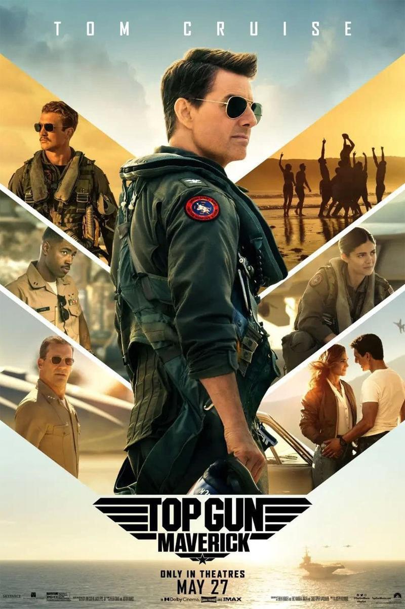

Cine Unju
Titulo
Pelicula 1
Pelicula 2
Pelicula 3
Pelicula 4
Dragon Ball Super: Super Hero
2022 ‧ Acción/Fantasía ‧ 1h 40m
Top Gun: Maverick

2022 ‧ Acción/Aventura ‧ 2h 11m
Thor: Amor y trueno
2022 ‧ Acción/Aventura ‧ 1h 59m
Jurassic World: Dominion
2022 ‧ Acción/Ciencia ficción ‧ 2h 27m